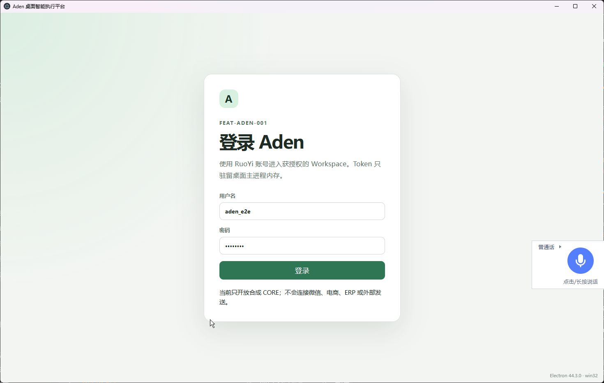
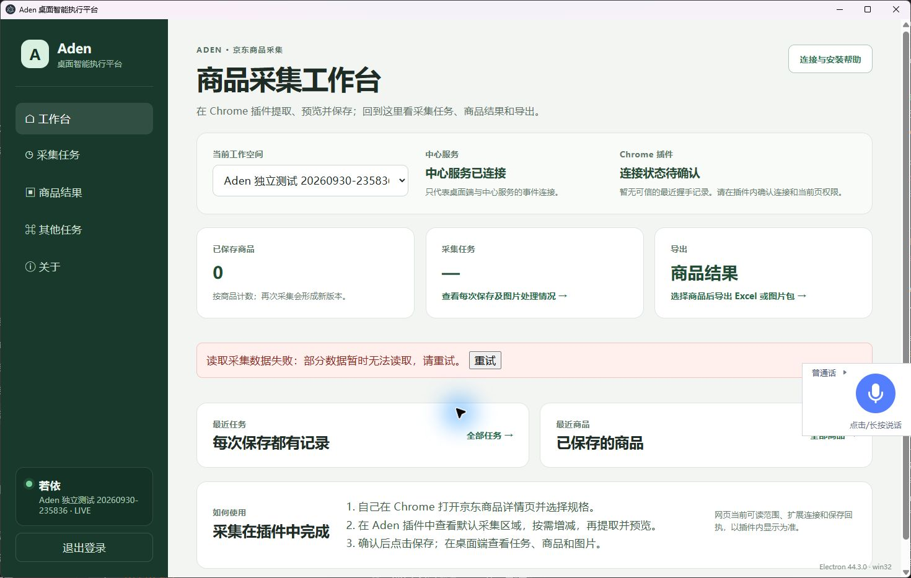

技术验证 / 启动与验收准备 · 采集任务缺陷未修复
Aden 独立桌面已启动，中心连接可用
FEAT-ADEN-001 · 开始于 2026-09-30，跨日执行至 2026-10-01（Asia/Shanghai）；执行者 Codex。沿用本地 0.3.0 bundle，原安装版未覆盖。用户接受决定仍待确认。
真实桌面已合成登录、指定 Workspace 显示 LIVE。首页“采集数据读取失败”是明确缺陷：IPC 操作表遗漏 tasks / taskDetail。本报告的 UI Pass 只涵盖启动、登录和中心连接，不表示新版插件或采集任务验收通过。
启动 UI：2 Pass0 Fail / 0 Blocked / 0 NotRun
2 已截图 / 0 待截图
技术 EV：2 Pass / 1 Fail0 Blocked / 0 NotRun
非 UI 检查截图不适用
新版手工：8 NotRunMANUAL-28～35 · 8 待截图
用户接受：待确认
环境、数据与隔离
API http://127.0.0.1:18093；Java PID 27148；Redis 16393 / PID 27832；公共 MySQL 13306 / dev_aden。当前公共 JAR SHA-256：a6d07cf3aa1b406c4490e42e8afe4d0b6e19e5f7a7f41d9b1dd9426f0b91231a。本轮不替换该包，不修改公共 processes.json 或启动脚本。
Workspace：Aden 独立测试 20260930-235836（c8a0eb9b-bf35-47b3-bc98-b645f7e5b12a）。桌面 PID 27956；专用 profile D:\2025Ai\26-05-23\java-workspace\.runtime\four-projects\aden\electron-profile-20260930-235836；专用采集管道与日常 Chrome 隔离，未注册/加载新扩展。
数据为公开 loopback 合成账号、新建 Workspace 与 CORE Runner，商品 0、采集任务 0；保留本轮测试资源供后续体验。Runner 无 UIA / Shell / 浏览器 / 任意文件 / 外部写能力。源码、构建入口和公共服务仍共享，不能宣称完整 worktree 隔离。
真实截图来自 computer-use / @oai/sky，Electron 44.3.0，截图像素 1471×934，CSS viewport 未取得。桌面控制使用原生窗口，未用网页或原型替代。报告预览仅使用本轮新建 IAB 标签；预览内核/版本未知。
本轮逐项结果（5 项）
UAT-BOOT-ADEN-01 · 真实独立 Electron 登录页Pass · 已截图- 输入 / 前置
- 本地 0.3.0 bundle、专用 profile / 采集管道、API 18093
- 操作
- 启动本项目 Electron → 通过 sky.list_windows 选唯一窗口 → 获取并保存原生截图 → view_image 回读
- 预期
- 真实登录页可辨，无中心服务连接错误
- 实际
- Electron 44.3.0 原生窗口已显示登录页；验证码关闭，密码遮罩。首次 Node 模式/隐藏启动失败已保留，修正后通过。
- 限制 / 遗留
- 只证明启动与登录页，不证明登录成功或采集。
- 证据
- 启动结果 JSON · 只读 API 回读

UAT-BOOT-ADEN-01-登录页.png · 原生 Windows Computer Use；点击查看原图。UAT-BOOT-ADEN-02 · 合成登录、Workspace 与中心连接Pass · 已截图- 输入 / 前置
- 公开 loopback 合成操作员；Aden 独立测试 20260930-235836
- 操作
- 原生窗口填写合成账号 → 登录 → 自动选择唯一 Workspace → 保存首页截图 → view_image 回读
- 预期
- 首页、指定 Workspace、LIVE/中心服务已连接可辨
- 实际
- 指定 Workspace 自动选中，中心显示已连接、侧栏 LIVE；商品数 0。另观察到采集数据读取失败、任务数为 —，技术缺陷另列 EV-03。
- 限制 / 遗留
- Pass 范围限登录及中心连接；Chrome 扩展未连接，新版采集业务未通过。
- 证据
- 启动结果 JSON · 只读 API 回读

UAT-BOOT-ADEN-02-首页连接及采集错误.png · 原生 Windows Computer Use；点击查看原图。EV-BOOT-ADEN-01 · 服务与产物归属Pass · 不适用- 输入 / 前置
- 公共 Aden 进程登记、loopback 18093/16393、本地 bundle
- 操作
- 只读核对 PID/命令/UTC 启动时间/监听 → 请求 captchaImage → SHA-256 回读
- 预期
- 服务归属一致、API可读、运行版本可追溯
- 实际
- Java 27148、Redis 27832 归属与监听匹配；captchaImage code=200、captchaEnabled=false；当前 JAR 与 bundle 哈希保存在启动结果。
- 限制 / 遗留
- 本轮未运行 Maven/npm 构建；复用产物不能宣称当前全工作树干净构建通过。
- 证据
- 启动结果 JSON · 只读 API 回读
EV-BOOT-ADEN-02 · 低权限 CORE Runner simulator 准备Pass · 不适用- 输入 / 前置
- 新 Workspace、CORE 注册、现有 Python 3.12 venv
- 操作
- 注册 CORE Runner → 只以内存凭据启动 simulator → Session/3秒单轮轮询 → 日志及服务端只读回读
- 预期
- 只访问 loopback；真实执行能力关闭；Session可建立
- 实际
- Session 已建立；venv launcher 4056 / Python 29376 持续运行；服务端 presence=ONLINE，capabilities=[CORE]；日志无异常。
- 限制 / 遗留
- 本轮没有创建 CORE 任务；成功与取消链路未重新执行。没有真实 UIA/Shell/浏览器/外部写入。
- 证据
- 启动结果 JSON · 只读 API 回读 · Runner 日志
EV-BOOT-ADEN-03 · 新版采集任务读取兼容核查Fail · 不适用- 输入 / 前置
- 首页真实采集数据错误；新 Workspace 中 items/tasks 接口
- 操作
- 保存首页失败画面 → GET 商品/任务接口 → 只读检查运行 JAR 和桌面 IPC 操作表
- 预期
- 新版桌面可读取采集任务摘要；运行包具备对应路由
- 实际
- 后端 items/tasks 两接口均 HTTP 200、有效空列表，JAR 包含 tasks/taskDetail。桌面源代码与 bundle 的 permission 表缺 tasks/taskDetail，在网络前抛“未知采集库操作”。
- 限制 / 遗留
- 最小修复为补两个只读操作的既有 read 权限映射并定向验证；本轮只读诊断，业务源码和共用 JAR均未修改。
- 证据
- 启动结果 JSON · 只读 API 回读
新版手工验收基线（不重置、不代验）
以下为既有唯一清单的只读摘要，本轮没有操作真实京东或扩展；它们不计入启动 UI 通过数。新版手工清单。
| ID | 待验目标 | 原结果 / 截图 | 当前限制 |
|---|
| MANUAL-28 | 插件七项默认全选及商品身份 | NotRun / 待截图 | 真实插件及页面操作尚未执行。 |
| MANUAL-29 | 已有区域点选加入与勾选联动 | NotRun / 待截图 | 真实插件及页面操作尚未执行。 |
| MANUAL-30 | 自选售后区域加入及已有项排除 | NotRun / 待截图 | 真实插件及页面操作尚未执行。 |
| MANUAL-31 | 提取范围与预览、图片/缺失项 | NotRun / 待截图 | 真实插件及页面操作尚未执行。 |
| MANUAL-32 | 调整范围后旧预览失效 | NotRun / 待截图 | 真实插件及页面操作尚未执行。 |
| MANUAL-33 | 保存回执与桌面任务定位 | NotRun / 待截图 | 桌面 tasks/taskDetail IPC 分发缺陷，修复后再执行；原清单仍保持 NotRun。 |
| MANUAL-34 | 任务详情、商品版本、关闭源页回看 | NotRun / 待截图 | 桌面 tasks/taskDetail IPC 分发缺陷，修复后再执行；原清单仍保持 NotRun。 |
| MANUAL-35 | 非商品页/权限拒绝的恢复提示 | NotRun / 待截图 | 真实插件及页面操作尚未执行。 |
历史项目进度
FEAT-ADEN-001：IMP-01～10 已完成，历史合成场景 4 Pass / 1 NotRun，用户接受待确认。FEAT-ADEN-002：原安装轮 6 Pass / 1 NotRun；最近并行环境复验 5 Pass / 1 Blocked / 1 NotRun，同步与云构建仍有缺口。
FEAT-ADEN-003：旧 UAT-JD-13～24 为 3 Pass / 9 NotRun；产品体验改版 2 Pass / 1 Blocked；最新 MANUAL-28～35 为 0 Pass / 8 NotRun。三组版本与证据范围不同，不合并成新版通过率。真实京东、真实 Chrome 权限/侧栏交互、完整异常矩阵未完成。
失败历史与下一步
首次 Electron 误以 Node 模式接收参数退出，错误见 原日志；修正子进程环境后仍因隐藏启动未产生可见窗口。归属时间规范化与已退出子进程竞态修正后，仅重启本轮桌面，最后真实登录成功。全部实际命令与失败保留在 本轮清单。
最小下一步：为 tasks/taskDetail 补充既有只读权限映射，定向验证 IPC 分发，在本项目独立构建目录生成产物后复验首页和采集任务页，再继续 MANUAL-28～35。保留失败截图和旧稳定 ID；真实采集另确认范围。
Python Provider、真实微信/浏览器控制、真实采集、Git、发布、重新初始化数据库及旧安装覆盖均未执行。
报告生成与检查
本 HTML 从本轮验收清单、启动结果 JSON、采集接口诊断 JSON 和两张原生实际截图生成；统计与 ID 已静态核对，图片均已保存并逐张回读。报告视觉检查：NotRun。IAB URL 安全策略拒绝 file 协议，仅允许 HTTP/HTTPS，并明确禁止以替代浏览器或 HTTP 间接绕过；本轮未绕过。已完成静态检查与实际截图回读，HTML 整页视觉检查未执行。报告本身不是第二套任务或用户决定事实源。
逐项清单 · 启动结果及产物哈希 · 接口诊断 · Runner运行输出